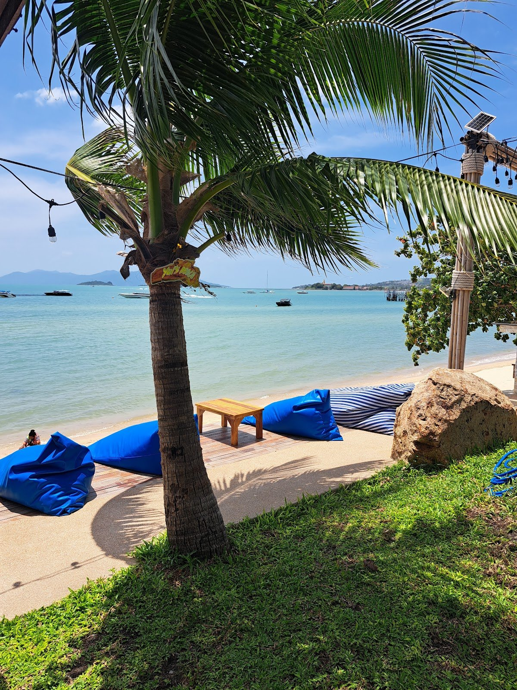
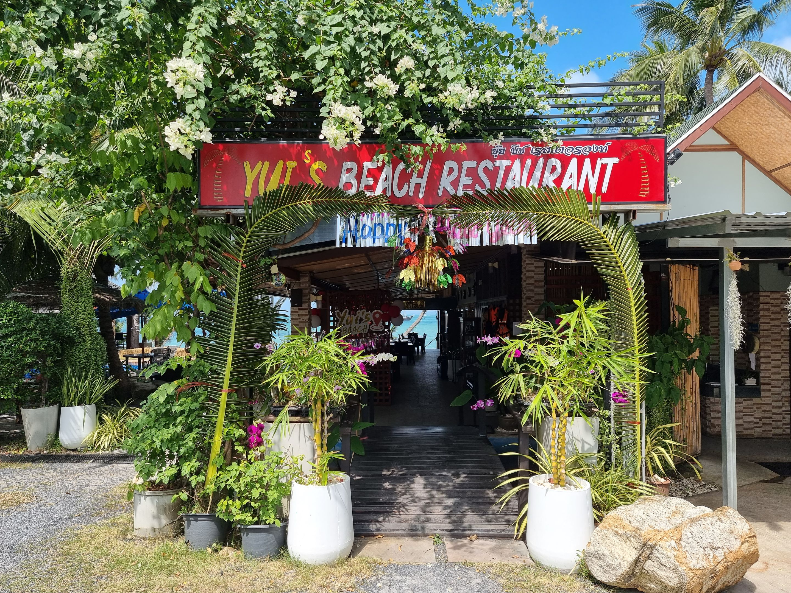

★★★★★
“We were a large group of 3 families and had our favorite dinner on Koh Samui! … the pool was great! Staff was friendly and patient, and drinks were delicious. Highly recommended.”

Bangrak Beach · Koh Samui
อร่อยกับอาหารไทยและฝรั่ง ริมทะเล วิวสวยพระอาทิตย์ตก
Sunset views, a pool for diners and cold coconuts, just minutes from Samui Airport.
Welcome to Yui’s
“Far from the noise. Far from the crowds. Every sunset tells a story.”
Yui’s sits right on Bangrak Beach on Samui’s north coast. Come for authentic Thai cooking and Western favourites, stay for a swim in the pool, and watch the sun go down over the islands. ร้านอาหารริมทะเล บรรยากาศชิล ๆ พร้อมสระว่ายน้ำ

Why guests come back
Tables face the water, so every evening ends with the sky turning orange over the islands.

Order food and drinks, then cool off in the pool or walk straight onto the beach. Families love it.
On Bangrak Beach, just minutes from Samui Airport. Great for a first or last meal on the island.
From the kitchen
Thai classics and European plates, plus fresh coconuts straight from the bar.


What guests say
“We were a large group of 3 families and had our favorite dinner on Koh Samui! … the pool was great! Staff was friendly and patient, and drinks were delicious. Highly recommended.”
“It’s truly a wonderful little spot and an amazing restaurant with delicious food. Every time we’re on Koh Samui, our very first stop has to be Yui’s. We absolutely love it!”
“ขอแนะนำร้านอาหารที่ขึ้นชื่ออีกร้านหนึ่งของเกาะสมุยค่ะ ไม่ว่าจะเป็นรสชาติอาหารที่ถูกปาก ความสะอาด การบริการที่เป็นมิตรของพนักงาน และมีอาหารให้เลือกทานหลากหลายชนิด…”

Tonight’s sunset is free
จองโต๊ะริมทะเล โทร 088 301 9153